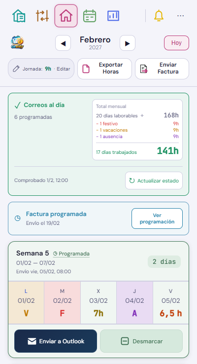
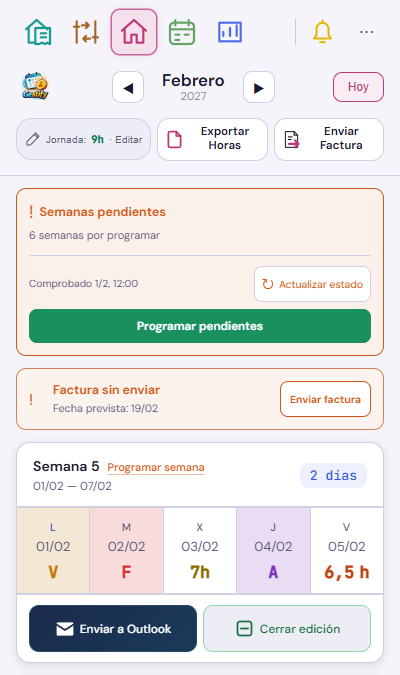
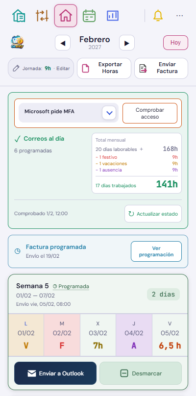
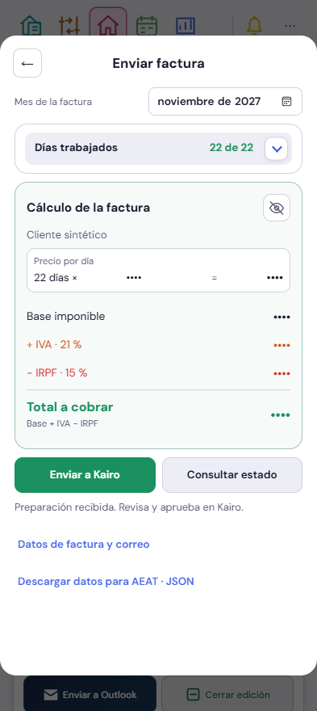
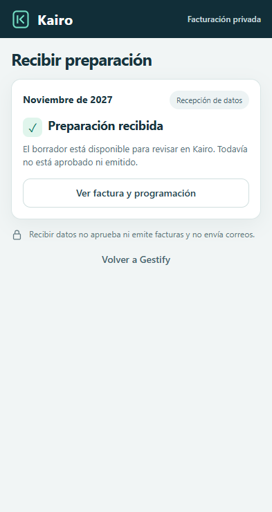
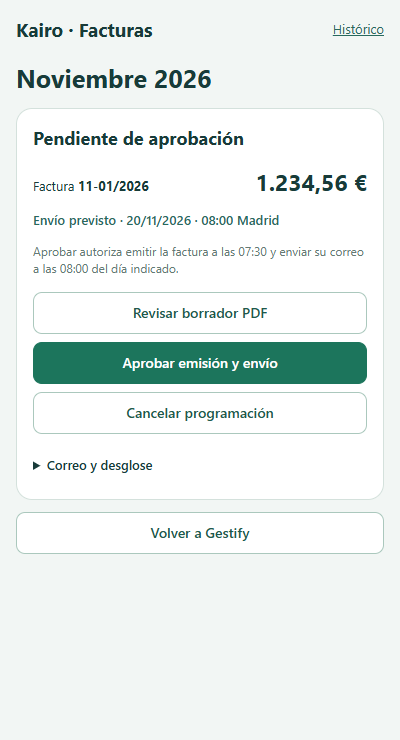

Interfaz real con datos ficticios. Solo se actualizan las tres referencias de Home del atlas y estos ejemplos. Las semanas conservan su diseño y acciones.
Resumen arriba a la derecha
Estado, resumen y actualización. Sin el bloque Próximo envío.

El + está junto a los días laborables. Al desplegar, las horas bajan a la fórmula conservando fuente, tamaño, peso y color.
Pendientes y acceso
Los pendientes ocultan el resumen. La factura conserva su acción propia.

El aviso de acceso ocupa una fila y permite desplegar la explicación.

Elegir y revisar otro mes
El selector permite preparar noviembre desde octubre sin cambiar Home.

La recepción conserva el mes y abre su revisión concreta.

Revisión compacta: PDF, aprobación y cancelación; correo y desglose plegables. Aprobar requiere una segunda confirmación.

Estas pruebas no emiten facturas ni programan correos reales. Kairo conserva un único plan fiscal activo: no se sustituye otro mes ya aprobado o con un envío pendiente.